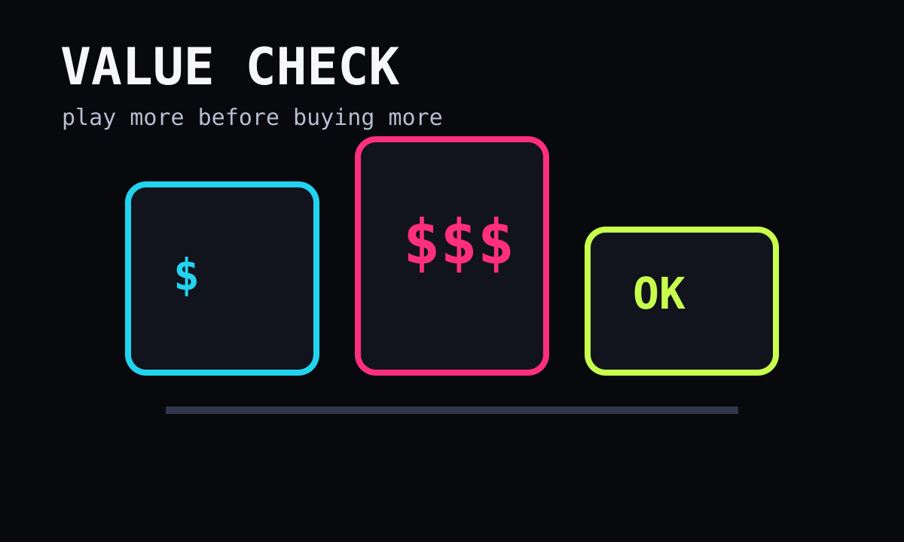

Gaming Hardware Is Pricier. Value Matters.
Memory demand, AI pressure and premium device pricing make lightweight gaming platforms more attractive.

TL;DR
When hardware gets expensive, lightweight gaming starts looking smarter.
Why gamers care
Players do not want to buy a new device just to play old favorites.
Move
Use browser discovery and local play before spending on new hardware.
The short version
AI demand, memory prices and premium devices are making gaming hardware feel less casual.
Player reaction
People become more careful. They compare more, upgrade slower and look for games that run well on what they already own.
For Arcade World
Fast web pages, local imports and a clean library are a good value pitch: play more before buying more.
Sources and further reading
Keep exploring
Open the Game Room or visit the latest stories.